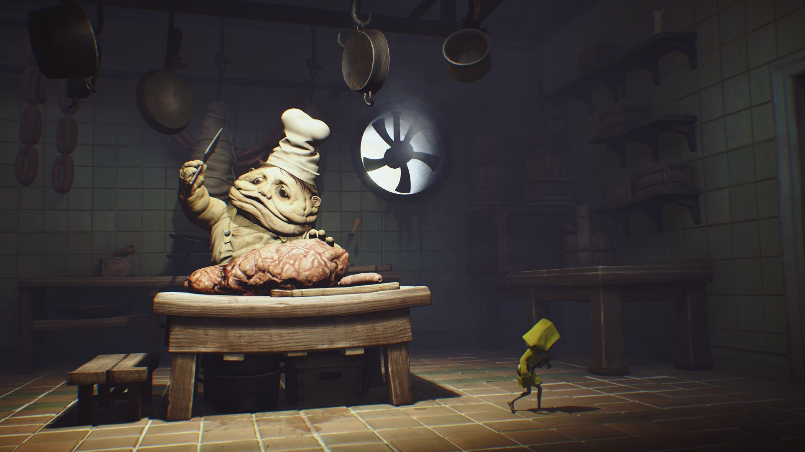
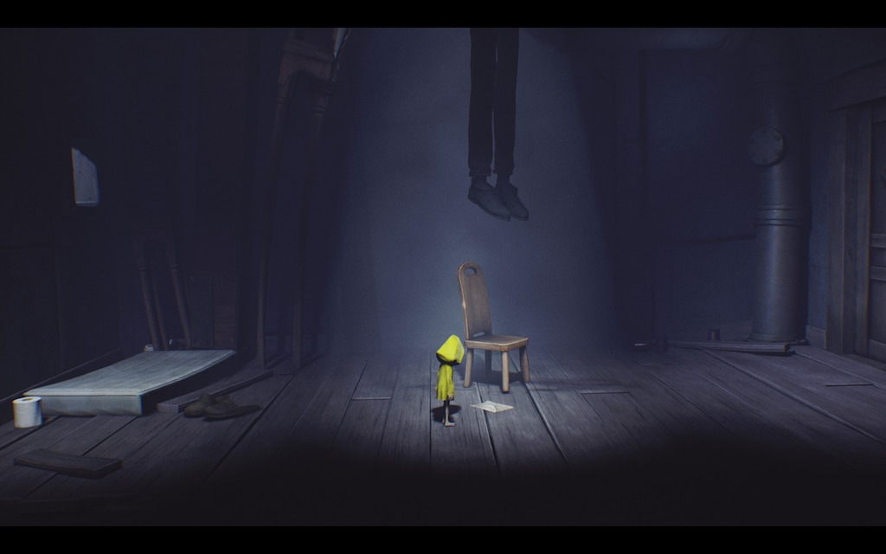
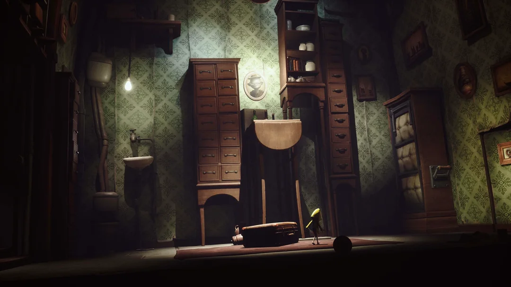
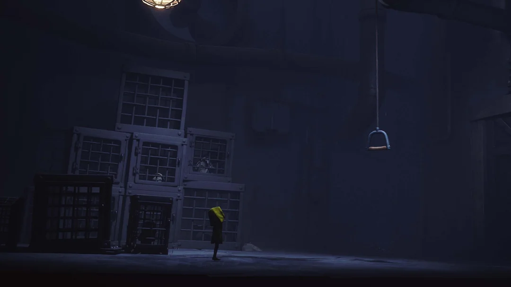

LITTLE NIGHTMARES

A Journey Through Shadows
⚠️ CONTENT WARNING ⚠️
🔴 SPOILERS - Major plot points will be discussed
🩸 GRAPHIC CONTENT - Violence and disturbing imagery
💀 DARK THEMES - Death, hunger, and body horror
🗣️ STRONG LANGUAGE - May contain profanity
Proceed with caution if sensitive to these topics
OVERVIEW
Developer: Tarsier Studios
Publisher: Bandai Namco
Genre: Puzzle-Platformer, Psychological Horror
Series: Little Nightmares I (2017), II (2021), III (2024)
A haunting indie horror game about Six, a small child trapped in The Maw, a mysterious vessel full of dark secrets. Navigate through grotesque environments and escape the residents of this nightmarish place.
PLATFORMS & AVAILABILITY
🖥️ PC
Steam, Epic Games Store
🎮 Consoles
PlayStation 4/5
Xbox One/Series X|S
Nintendo Switch
📱 Mobile
iOS, Android
☁️ Cloud
Xbox Cloud Gaming
VISUAL MASTERPIECE
Art Direction
- Distinctive Artstyle: Hand-crafted, grotesque character design
- Atmospheric Lighting: Shadows and silhouettes create tension
- Unsettling Environments: Each area tells a story of horror
- Symbolism: Color palette of yellows, grays, and deep blacks
GAMEPLAY MECHANICS
Core Experience
- Puzzle-Solving: Navigate complex environments using logic
- Stealth Mechanics: Avoid detection by grotesque creatures
- Platforming: Precise movement and timing required
- Inventory System: Collect and use items strategically
- No Combat: Six cannot fight—only run, hide, and outsmart
NARRATIVE & THEMES
Thematic Elements
- Hunger & Consumption: The primal fear of being consumed
- Childhood Trauma: Innocent perspective facing nightmarish reality
- Power Dynamics: The powerless vs. the grotesque predators
- Silence & Isolation: No dialogue creates profound atmosphere
- Symbolism: The game speaks in visual metaphors
The Architecture of Dread:
Psychological Fear
Analyzing Scale, The Uncanny, and Sensory Isolation
Presenters: Ayoub Rezaei, Raufay Khan
CORE CONCEPT: THE MECHANICS OF REGRESSION
- Beyond Jump Scares: The game avoids cheap shocks in favor of sustained tension.
- The Strategy of Regression: Systematically stripping the player of power and agency.
- The Goal: Forcing the player into the perspective of a vulnerable child.
- Key Question: How does the game design make us feel small?
THE TYRANNY OF SCALE
- Environment as Oppressor: Door handles are out of reach. Chairs become mountains to climb. Distance is measured in small, agonizing steps.
- Learned Helplessness: The sheer size of the world reinforces fragility.
- Genre Shift: Moves from "Action-Survival" to "Pure Evasion."
- Psychological Effect: You are not a warrior; you are an intruder.
THE FACE OF CONSUMPTION
LEARNED HELPLESSNESS
A WORLD NOT BUILT FOR YOU
THE SCALE OF FEAR
THE UNCANNY VALLEY OF DOMESTICITY
- Freud’s "Unheimlich" (The Uncanny): Horror derived from the familiar made strange.
- Corrupted Safety: Bedrooms → Captivity, Kitchens → Slaughter
- Grotesque Authority: Enemies (Chefs, Janitor) are distortions of adult authority figures. Biologically "wrong" (sagging skin, exaggerated limbs).
- Theme: Adulthood as a grotesque consumption machine.
THE ANTAGONISTS: ARCHETYPES OF TRAUMA (1/2)
The Janitor (Roger)
Brief: A blind figure with impossibly long arms who relies on sound to hunt Six.
Trauma Metaphor: Represents the fear of inescapability. To a child, an authority figure seems "all-knowing" and "all-reaching" (no shelf is high enough to hide on). The "Boogeyman" who snatches you if you make a sound.
The Twin Chefs
Brief: Grotesque, wheezing figures who violently prepare "meat" in the kitchen.
Trauma Metaphor: Represents the corruption of nurturing. The kitchen becomes a slaughterhouse. They embody the fear of being eaten and the confusion of seeing caregivers perform violent acts.
THE ANTAGONISTS: ARCHETYPES OF TRAUMA (2/2)
The Guests
Brief: Bloated, mindless hordes who board the Maw solely to eat.
Trauma Metaphor: Represents the fear of greed and loss of individuality. They symbolize the child’s view of the adult world as ugly, obsessed with consumption, and dangerous. A faceless stampede.
The Lady
Brief: The elegant, masked ruler of the Maw who is obsessed with mirrors and vanity.
Trauma Metaphor: Represents the toxic mother figure. She embodies the fear of judgment, vanity, and conditional love—the pressure to be "perfect" or else be destroyed.
THE SOUND OF SILENCE
- Isolation: Lack of dialogue removes human connection.
- Environmental Cues: The heavy silence amplifies creaking floors and wet sound effects.
- Physiological Bridging: The Heartbeat Mechanic: When hiding, the controller vibration and audio sync with a heartbeat. Connects the player’s anxiety directly to the avatar.
- Projection: Silence forces the player to imagine the narrative, often fearing the worst.
PRIMAL ANXIETIES
- The Prey Response: Almost every enemy motive is consumption. Reduces the player to the bottom of the food chain.
- Light vs. Dark: Not just aesthetic, but a core gameplay mechanic. Reinforces the childhood fear of "something in the dark."
- No "Why": The lack of explanation mimics the confusion of a nightmare.
CONCLUSION: THE TRIAD OF FEAR
Little Nightmares weaponizes the anxieties of the inner child:
- Scale: You are small.
- Uncanny: The world is wrong.
- Silence: You are alone.
It succeeds not by scaring the adult mind, but by unsettling the child within.
AUDIO DESIGN
Sensory Experience
- Minimalist Soundtrack: By composer Jonathan Brisby
- Ambient Sounds: Creaks, drips, and unsettling whispers
- No Voice Acting: Children make only innocent giggles and scared sounds
- Dynamic Audio: Sound design builds tension and dread
- Silence as Tool: Moments of quiet are more terrifying than noise
QUESTIONS FOR YOU
❓ What makes a game truly "horror"?
❓ How does silence intensify fear?
❓ What is the role of art in horror storytelling?
❓ Why are child protagonists so effective in horror?
GAMEPLAY DURATION
Little Nightmares I
4-6 hours
Story Campaign
Little Nightmares II
5-7 hours
Story Campaign
With Collectibles
10-15 hours
100% Completion
WHAT WE COULD HAVE DISCUSSED
- 📖 Detailed story analysis and fan theories
- 🎬 Comparison with other horror media
- 🧠 Psychological analysis of the game's impact
- 🎨 Deep dive into world-building and lore
- 🏆 Critical acclaim and award nominations
- 👥 The relationship between Six and Mono
- 🎮 Alternative gameplay styles and speedrunning
- 💭 Existential questions the game raises
RESOURCES & LORE
📜 Official
📖 Knowledge
🎬 Analysis
🎵 Media
THANK YOU FOR WATCHING
May you escape your own nightmares
Questions?
🎮 Little Nightmares - By Tarsier Studios